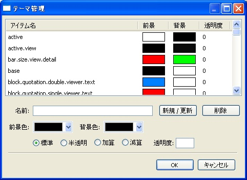

Mebiusbox 2.x ユーザーガイド
テーマ
Mebiusbox2 では、ある程度自由に配色を設定することができるテーマ機能があります。
テーマ機能を利用するためにはスコープとセレクタを理解しておく必要があります。
テーマのカスタマイズ
メインメニューから「表示 › テーマ管理」を選択します。

アイテム名
スコープ名のことです。
前景
文字色のことです。
背景
背景色のことです。
透明度
透明度です。演算モードが「半透明」のときに使用されます。
標準、半透明、加算、減算
演算モードです。
スコープ
Mebiusbox2 にはいくつものテーマ用スコープが存在します。
カスタマイズは、セレクタを使って設定したいスコープを決定し、前景色、背景色、演算モードを指定します。
演算モード
演算モードには、標準、加算、減算、半透明の４種類あります。
例
ここでスコープitem.view.detailについて、どうテーマが適用されるか解説します。
この場合、このスコープに影響のあるセレクタは次の３つです。
- item
- item.view
- item.view.detail
この時、item, item.view, item.view.detail それぞれにテーマが設定されていた場合、item のテーマ、item.view のテーマ、item.view.detail のテーマと順番に適用します。
もう少し詳しく見ていきます。
それぞれのセレクタは次のように設定されているものとします。
| セレクタ | 背景色 | 演算モード |
|---|---|---|
| item | RGB(255,255,255) | 標準 |
| item.view | RGB(32,32,32) | 減算 |
| item.view.detail | RGB(32,32,32) | 減算 |
スコープ
item.view.detailの背景色は、まず、item のセレクタが適用され RGB(255,255,255) となります。次に、item.view が適用され、RGB(255,255,255) から減算し、RGB(224,224,224) となります。
そして、item.view.detail が適用され、RGB(224,224,224) から RGB(32,32,32) が減算されます。
最終的に RGB(192,192,192) が item.view.detail の背景色となります。
特殊なスコープ
Mebiusbox2 のテーマ用スコープには特別なスコープがあります。
focus, active, target, select, hover
| focus | フォーカス状態 |
|---|---|
| active | アクティブ状態 |
| target | ターゲット状態 |
| select | 選択状態 |
| hover | マウスが乗っている状態 |
これらを状態要素と読んでいます。
状態要素はスコープの前に付けられます。
例えば、あるアイテム（通常 item というスコープ）がフォーカス状態をもつと、
focus.itemというスコープに変わります。ここで注意することは、
base
すべてのスコープにおいて、基本となるテーマです。
テーマが設定されていない場合は base テーマが適用されます。
base テーマがない場合は、前景（黒）、背景（白）、演算モード（標準）というテーマが代わりに使用されます。
スコープは全て base テーマで初期化されます。
frame
一部のスコープには、枠線を表示することができます。
例えば、item.view.detailというスコープは枠線を表示することが出来ます。
スコープに frame を前に付けて枠線の色を指定するこができます（枠線の色は背景色が使われます）
frame.item.view.detail
この場合、item.view.detail, frame.item.view.detail という順番でテーマが適用されます。
テーマ用スコープ一覧
| スコープ | 説明 | 特殊スコープ |
|---|---|---|
| window.dialog.select_tab.list | タブ選択ダイアログのリストコントロール | |
| window.pane.folder | フォルダーペイン | select, target |
| window.pane.library | ライブラリペイン | |
| window.pane.job | ジョブペイン | |
| window.pane.property | プロパティペイン | |
| window.view.detail | Details ビュー | |
| window.view.filter | フィルターバー※変更予定 | |
| window.view.mix | Mix ビュー | |
| window.view.movie | Movie ビュー | |
| window.view.smilevideo | SmileVideo ビュー | |
| window.view.thumb | Thumbnails ビュー | |
| window.filter | フィルターウィンドウ | |
| window.viewer.text | テキストビューア | select |
| window.viewer.binary | バイナリビューア | select |
| window.viewer.image | 画像ビューア | |
| group.window.pane.property | プロパティペイン：グループ | |
| description.window.pane.property | プロパティペイン：説明 | |
| line.window.pane.property | プロパティペイン：ライン | |
| line.window.pane.folder | フォルダペイン：ライン | select, target |
| line.window.pane.library | ライブラリペイン：ライン | |
| ctrl.window.viewer.text | テキストビューア：コントロール | |
| lineno.window.viewer.text | テキストビューア：行番号 | |
| lineno.window.viewer.binary | バイナリビューア：アドレス | |
| item.dialog.select_tab | タブ選択：リストコントロールのアイテム | focus, select |
| item.pane.job | ジョブペイン：リストコントロールのアイテム | focus, select |
| item.view.detail | Details ビュー：アイテム | focus, select, target |
| item.view.mix | Mix ビュー：アイテム | focus, select, target, hover |
| item.view.movie | Movie ビュー：アイテム | focus, select, target, hover |
| item.view.smilevideo | SmileVideo ビュー：アイテム | focus, select, target, hover |
| item.thumb | Thumbnails ビュー：アイテム※変更予定 | focus, select, target, hover |
| item.image.thumb | Thumbnails ビュー：サムネイル※変更予定 | |
| item.window.filter | フィルタウィンドウ：アイテム | |
| item2.dialog.select_tab | タブ選択：リストコントロールのアイテム（偶数行） | focus, select |
| item2.pane.job | ジョブペイン：リストコントロールのアイテム（偶数行） | focus, select |
| item2.view.detail | Details ビュー：アイテム（偶数行） | focus, select, target |
| tag.item.view | Details ビュー：タグアイテム | |
| tag.item.count.view | コントロールバー：item※変更予定 | |
| tag.total.count.view | コントロールバー：total※変更予定 | |
| tag.filter.count.view | コントロールバー：filter※変更予定 | |
| tag.sort.count.view | コントロールバー：sort※変更予定 | |
| tag.select.count.view | コントロールバー：select※変更予定 | |
| tag.sortby.view | コントロールバー：sortby※変更予定 | |
| title.item.view.movie | Movie ビュー：アイテムのタイトル | |
| title.item.view.smilevideo | SmileVideo ビュー：アイテムのタイトル | |
| title.item.view.mix | Mix ビュー：アイテムのタイトル | |
| head.item.view.smilevideo | SmileVideo ビュー：アイテムのヘッダー | |
| head.item.view.mix | Mix ビュー：アイテムのヘッダー | |
| head.item.view.movie | Movie ビュー：アイテムのヘッダー | |
| filter.item | フィルターウィンドウ：アイテム | hover, select |
| system.filter.item | フィルターウィンドウ：システムアイテム | hover, select |
| selection.view.filter | フィルターウィンドウ：選択領域 | hover |
| bar.size.view.detail | Details ビュー：ドライブの領域表示バー | hover |
| view | Details ビュー：ソート名のカラム列※変更予定 | active |